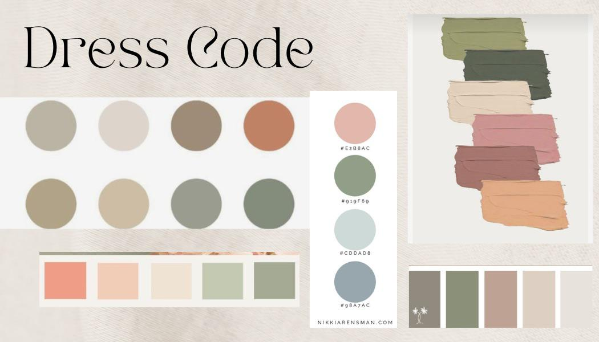

CUMPLEAÑOS
Lucía Two One
·LA GRAN VENGANZA·
DECORACIÓN
ACTIVIDADES
Comenzaremos con la comida y el vino. Para complementar nuestra exquisita selección de platos, hemos seleccionado un vino tinto de alta calidad del Mercadona, que acentúa los sabores y realza la experiencia culinaria. Este vino es conocido por su aroma complejo y sabor robusto, y estamos seguros de que será el complemento perfecto para su cena.
Continuando con las actividades, habrá una sesión de fotos estilo vintage con cámaras polaroid para capturar momentos especiales y crear recuerdos duraderos. Nuestro equipo de fotografía estará disponible para tomar fotos de los invitados y ofrecerles una foto impresa de recuerdo para llevar a casa.
También tendremos juegos de mesa para aquellos que deseen participar. Los juegos de mesa son una excelente manera de relajarse y socializar con otros invitados mientras disfruta de una copa de vino y una selección de deliciosos aperitivos.
En resumen, nuestro evento ofrecerá una experiencia gastronómica única con una excelente selección de vinos, una sesión de fotos estilo vintage con cámaras polaroid para crear recuerdos duraderos, y juegos de mesa para aquellos que deseen disfrutar de una noche de diversión y entretenimiento.
COMIDA
La comida que se servirá en nuestro evento es una deliciosa combinación de sabores y texturas, que satisfará a todos los paladares. Comenzaremos con una selección de entrantes, que incluirá una variedad de canapés y ensaladas, todos elaborados con ingredientes frescos y de alta calidad.
El plato principal será una selección de carnes a la barbacoa, como brochetas, filetes, salchichas y costillas, junto con una selección de verduras asadas. Nuestro equipo de cocina se asegurará de que cada plato esté perfectamente cocinado y sazonado, para que pueda disfrutar de todo el sabor de la barbacoa en cada bocado.
Para el postre, tenemos una selección de dulces y pequeños productos de repostería que serán el broche perfecto para su experiencia culinaria en nuestro evento. Además, como mencionaremos posteriormente, también serviremos nuestra deliciosa tarta de red velvet sin lactosa con decoración floral.
Nuestro equipo de cocina está comprometido con la calidad y la frescura de los ingredientes que utilizamos, y trabajamos duro para asegurarnos de que cada plato que servimos sea excepcional.
DRESS CODE
El dress code para nuestro evento con temática de estilo old money es elegante y sofisticado. Se requiere que los invitados eviten los colores blanco y negro y en su lugar elijan tonos ricos y vibrantes que reflejen la atmósfera general del evento. Los colores permitidos son aquellos que se muestran en la imagen adjunta.
Para mantener un nivel apropiado de formalidad, se prohíbe el uso de sudaderas y ropa tipo chándal. Por favor, elija un atuendo que refleje la elegancia y sofisticación de la ocasión.
Además, todos los invitados deben llevar un accesorio dorado. Puede ser un broche, un collar, unos pendientes o cualquier otro tipo de joya dorada que complemente su atuendo. Esta regla se ha establecido para agregar un toque de lujo y estilo a la ocasión.
Esperamos que siga cuidadosamente nuestro dresscode para que todos los invitados puedan disfrutar de la atmósfera elegante y sofisticada del evento.
TARTA
La tarta que serviremos en nuestro evento será de red velvet, con una textura suave y esponjosa, y un sabor delicioso y único. Esta tarta se ha elaborado sin lactosa, para que todos los invitados puedan disfrutarla sin preocupaciones.
Además, esta tarta está decorada con hermosas flores frescas que le dan un toque elegante y sofisticado. La decoración floral puede variar según la temporada y la disponibilidad de flores, pero siempre se seleccionan las más bellas y frescas para cada evento.
Nuestro equipo de pastelería se ha asegurado de que cada porción de tarta tenga la cantidad perfecta de glaseado de queso crema sin lactosa, para que pueda disfrutar del sabor auténtico de la tarta de red velvet. Esta combinación de sabores y texturas hará que su experiencia en nuestro evento sea aún más especial.
Estamos seguros de que disfrutará de nuestra tarta de red velvet sin lactosa con decoración floral, siento este un punto culminante en su experiencia en nuestro evento.
UBICACIÓN
Nuestro evento tendrá lugar en una parcela situada en medio del campo, rodeada de una hermosa naturaleza y un aire fresco y limpio. La parcela es fácilmente accesible en coche y hay suficiente espacio de estacionamiento para todos los invitados.
La parcela cuenta con todas las comodidades necesarias para garantizar que nuestros invitados tengan una experiencia agradable y confortable. Habrá una zona de comedor al aire libre y una zona de relax, donde podrán sentarse y disfrutar de las vistas mientras socializan con otros invitados.
La dirección es Calle Pinsapo , Camino de Alcalá, Mejorada del Campo. La parcela se encuentra justo al final de la calle, a la derecha. Esperamos que disfruten de su estancia.